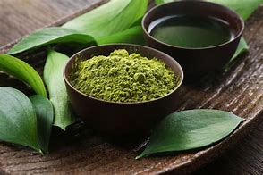
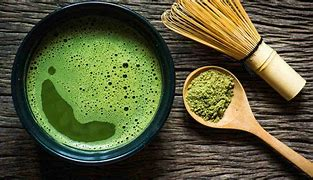
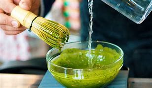

El té matcha es un té verde de origen chino, aunque muchas personas lo conocen por su relación con la cultura japonesa. El té matcha comenzó a beberse en China durante la dinastía Song (960-1279). A diferencia del resto de los tés que se presentan en hebras (en hojas sueltas), el matcha tiene una particularidad. Es decir, que sus hojas están molidas en forma de un polvo muy fino.
Antes que nada, la forma tradicional de preparación del matcha es la que se desarrolla en la ceremonia japonesa del té.
Allí se coloca el polvo en un bowl grande llamado chawan al que le agregamos agua caliente. Luego lo emulsionamos con un batidor de bamboo llamado chasen hasta que la mezcla adquiere una consistencia homogénea. Cómo resultado se forma una capa de espuma en su superficie.
Pero el estilo más moderno de utilizar el matcha es simplemente mezclarlo enérgicamente con el agua. También incorporarlo en la batidora al momento de hacer un licuado saludable o batir enérgicamente con agua o jugos en un pote.
 